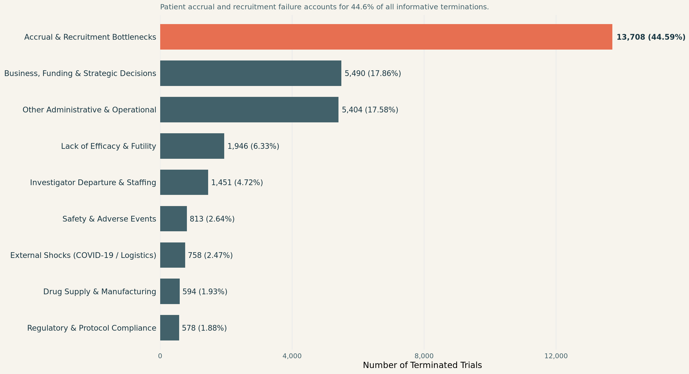

What Clinical Trial Termination Looks Like
An empirical examination of 34,295 prematurely stopped trials, the underlying drivers of failure, and their clinical footprint.
What is Clinical Trial Termination?
In biomedical research, a terminated trial is a registered study that was stopped prematurely before reaching its planned completion date and enrollment targets, with an explicit determination that recruitment and intervention will not resume.
Unlike studies that are temporarily suspended (placed on pause pending safety review, protocol amendment, or supply replenishment) or withdrawn (cancelled before enrolling a single participant), a terminated study has typically:
- Expended substantial institutional capital, investigator time, and administrative effort.
- Often administered experimental investigational drugs or surgical procedures to human volunteers.
- Halted before generating adequate statistical power to answer its primary clinical endpoint.
Across the 602,514 studies registered in ClinicalTrials.gov (AACT), 34,295 trials met this terminal fate.
34,295
Terminated Trials
Permanent study halts in AACT
44.6%
Accrual Failures
#1 reported reason for termination
80%+
Operational Causes
Recruitment, funding & administration
< 10%
True Biological Fails
Toxicity or confirmed futility
The Anatomy of Failure: Why Do Trials Halt?
When sponsors terminate a study, ClinicalTrials.gov asks for a reason in the why_stopped field. In our candidate dataset, 30,742 terminated studies provided an informative rationale.
Categorizing these records reveals a stark, crucial reality: the vast majority of clinical trial terminations are NOT caused by drug toxicity or biological failure, but by operational and logistical breakdown. This means that the company running the trial cannot produce its goods or sell what little it may have on the market.
Deconstructing the Primary Failure Modes
- Accrual & Recruitment Bottlenecks (44.6%, 13,708 trials):
- Phrases such as “slow accrual,” “low enrollment,” “inability to recruit eligible participants,” and “zero participants enrolled after 12 months” dominate the registry.
- Trials often fail because inclusion criteria were too stringent, competing trials siphoned eligible patients, or investigators drastically overestimated community disease prevalence.
- Business, Funding & Strategic Reprioritization (17.9%, 5,490 trials):
- Commercial sponsors terminate viable trials due to corporate mergers, portfolio reprioritization, or competitor drugs achieving earlier approval.
- Academic and grant-funded trials encounter funding cliffs where multi-year grant cycles expire before enrollment completes.
- Administrative & Investigator Departures (22.3%, 6,855 trials combined):
- A critical vulnerability in academic medicine: when a Principal Investigator (PI) relocates, retires, or changes institutions, studies frequently stall and terminate due to lack of leadership succession.
- Biological Endpoints: Safety & Futility (< 10%, 2,759 trials):
- Only 2.6% of terminations cite severe adverse events, toxicity, or safety concerns, while 6.3% cite demonstrated futility at planned interim analyses.
- While stopping for confirmed futility or toxicity is scientifically appropriate to protect patients, over 80% of terminations represent preventable operational failure.
The Accrual Shortfall: Zero-Participant Trials
What does termination look like at the individual trial level?
A substantial portion of terminated trials suffer from complete recruitment paralysis: - Over 3,200 terminated trials in AACT report an actual enrollment of zero participants despite having spent months navigating ethics review and contract execution. - Another 6,500 trials terminated after enrolling fewer than 5 participants, generating zero statistical value while tying up clinical coordinators and facility bandwidth.
NoteThe “Ghost Trial” Phenomenon
When a trial fails to recruit, it becomes a “ghost trial”—a protocol that consumed IRB resources, clinical site time, and registry space without producing any publishable or actionable medical evidence.
The Temporal Drag: How Terminated Trials Linger
Terminated trials do not halt overnight. An analysis of elapsed duration (study_duration_days) reveals:
- The median duration of terminated interventional trials before official halting is 812 days (approx. 2.2 years).
- Many trials endure protracted “enrollment drift”—a period lasting 18 to 36 months where recruitment slows to a trickle, but sponsors hesitate to officially pull the plug due to sunk costs.
- This protracted drift delays investigator reassignment, locks up patient referral pipelines, and defers decision-making on alternative therapeutic candidates.